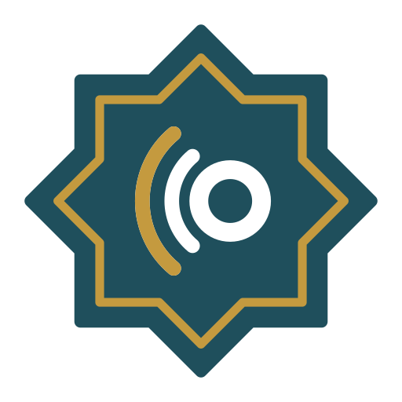

The star and the voice
An eight-pointed star after the rub el hizb that divides the mushaf, with a gold rule inside its edge. In the centre, a sukun ring with the voice travelling outward in the reading direction. The symbol is the same in Arabic and English and works alone as the app icon.
Arabic and English
The symbol sits on the reading-start side: right of the Arabic wordmark, left of the English. The wordmark carries the brand shadda on the waw in Arabic and over the w in English. Arabic is set in Aref Ruqaa Bold, English in Jost Medium; both are redrawn as outlines for final artwork.
With tagline: use only at large sizes, such as the website hero, store listing and printed materials.
Give it room
Keep a margin of x on every side, where x is one quarter of the symbol height. Nothing else, including other text, images or the screen edge, enters this area.
Small sizes
Below these sizes the gold rule and the voice lines fill in. At 16 px, use the one-colour symbol.
Four versions
Full colour on Paper is the default. Reversed on Night ink for dark mode and dark photos. One-colour versions are for single-ink printing, embossing and system icons; they replace the gold with a cut-out.
On the home screen
The reversed symbol on Ink teal. The system applies the corner mask on iOS and the shape on Android; supply square artwork.
Palette
Gold is only an accent: the rule in the symbol, the shadda in the wordmark, and small highlights. Tajweed and mistake colours are defined separately in the app so they never collide with the brand.
Type in the app
Keep it intact
- Use the supplied artwork. Do not redraw, retype or re-space the wordmarks.
- Do not stretch, rotate, outline or add shadows, gradients or glows.
- Do not recolour outside the four versions, and do not use gold for the star itself.
- Keep the symbol's position: right of the Arabic, left of the English.
- Do not set the logo over busy imagery; use the reversed version on a calm, dark area.
Downloads
Symbol and icon files are vector SVG with true cut-outs, so they work on any background. Lockups are PNG with transparent backgrounds; final vector lockups need the type converted to outlines in a vector editor.


Export artboards
Source for the PNG lockups above.

